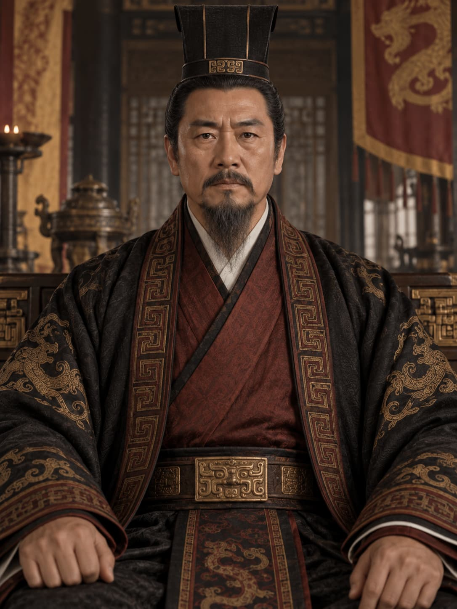
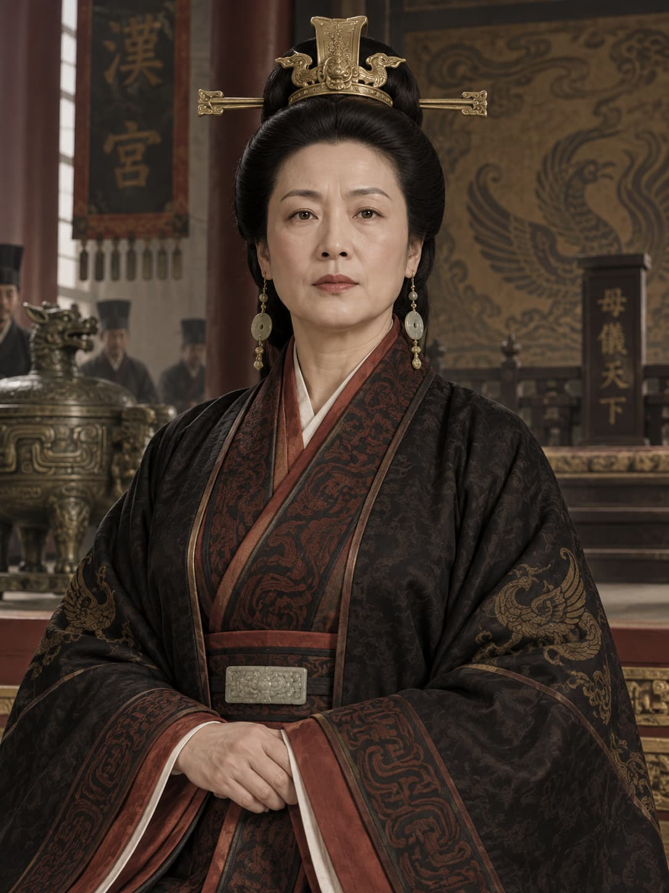
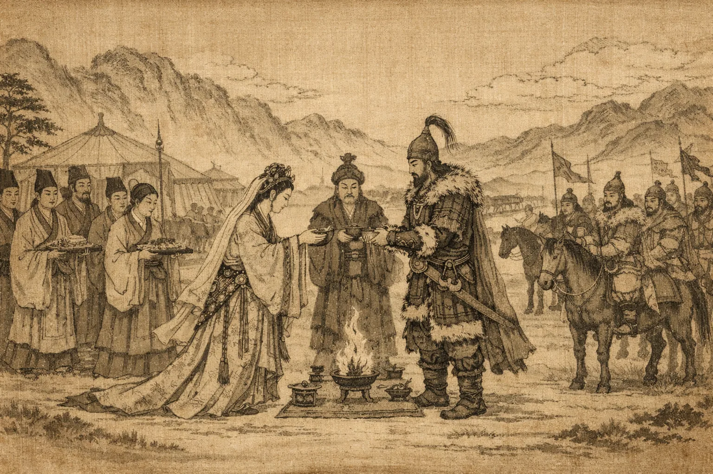
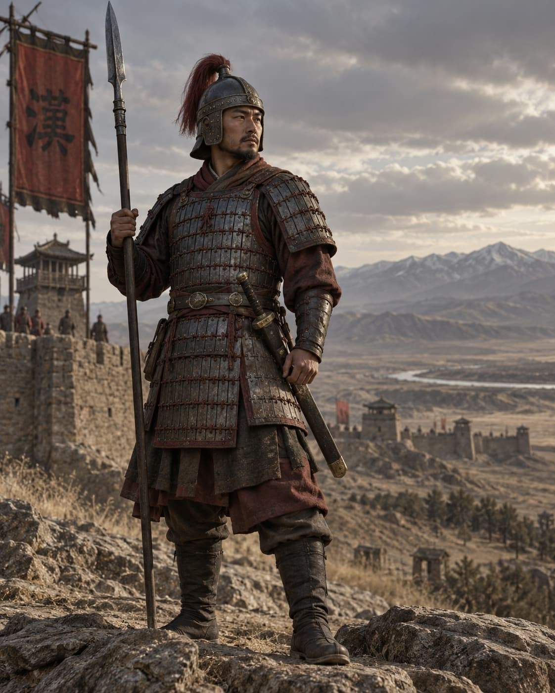
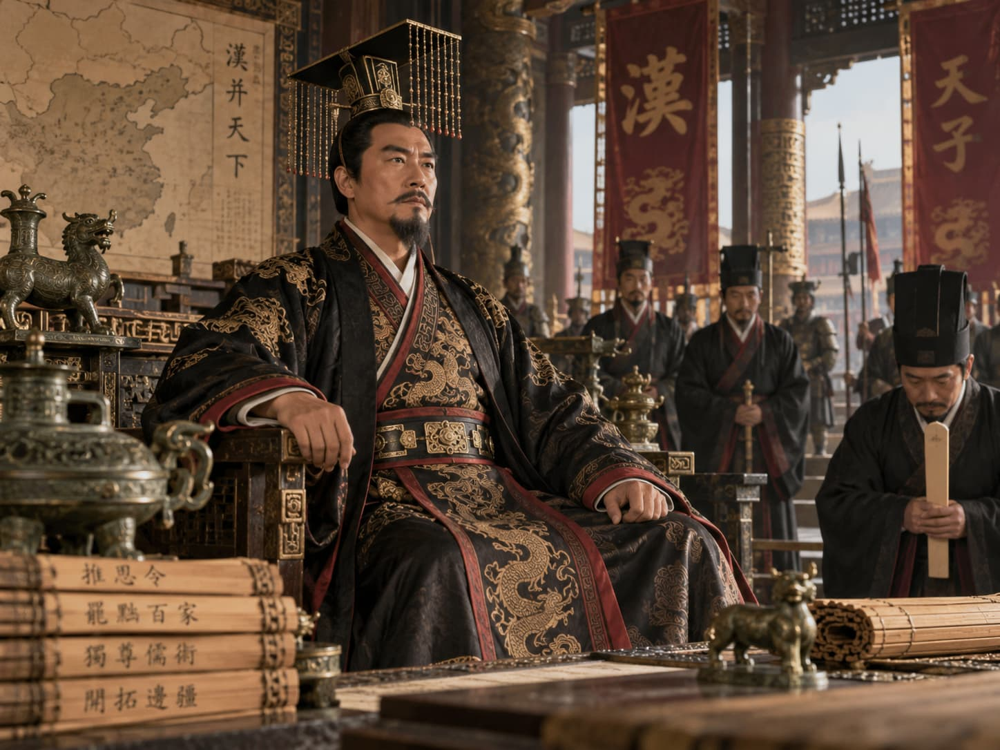
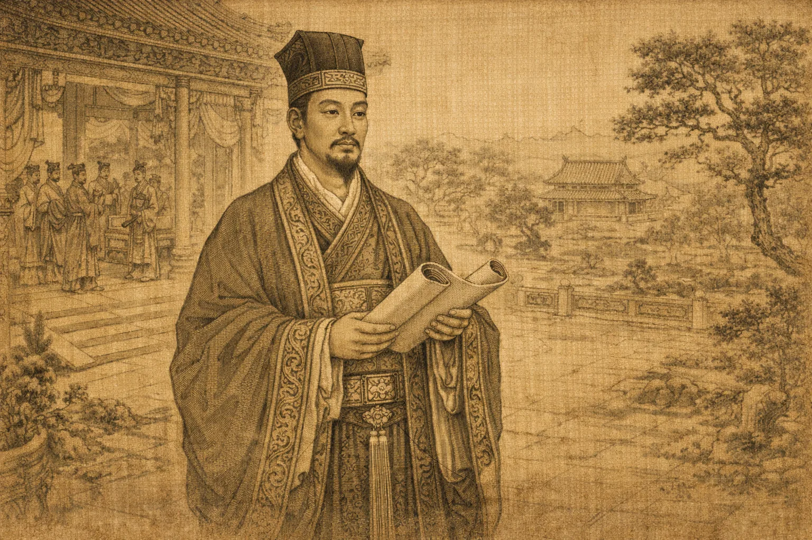

Central claim: Han did not reject Qin. Han rulers kept the centralized bureaucratic state while reducing some burdens, experimenting with frontier policy, expanding state economic power, and increasingly recruiting officials through Confucian learning.
In shorthand: Confucian rhetoric + Legalist bureaucratic methods.
Qin built the imperial machine. Han made it durable.
What did Han keep from Qin, and what did it change?
Regional commanders and former Qin officials competed to decide what would replace the empire.
Xiang Yu and Liu Bang emerged from that struggle.
Political problem: victory required more than battlefield success.

Emperor Gaozu · Founding the Han settlement
Kept: centralized administration, appointed officials, taxation, law, and military organization.
Changed: the burden of rule, the rhetoric of legitimacy, and the balance between center and regional powers.
Han made Qin’s machinery more politically usable.
Internal divisions and frontier threats
How could a family serve the throne—and become a rival to it?
↗ Companion mini-lecture: Empress Lü and the Problem of Regency

Empress Lü · Regency and court power
Child or weak emperor
↓
empress dowager becomes regent
↓
her natal family gains influence
↓
court factions compete for access to the throne
How do you protect a young emperor without creating someone powerful enough to replace him?
How did the Han manage power inside the empire?
Diplomacy, material transfers, and war
Horses supported both pastoral life and warfare: they helped Xiongnu herders manage livestock and gave Xiongnu armies exceptional mobility as mounted archers.

Heqin · Marriage alliance and frontier diplomacy
Emperor Wu shifted decisively toward sustained offensive warfare.
Han armies pushed against Xiongnu positions through cavalry campaigns and frontier expansion.
These campaigns required enormous resources.
Diplomacy and negotiation did not disappear, but the balance shifted toward military pressure.

Han military expansion · Frontier warfare
No single Han policy permanently settled the northern frontier.
Why did Han rulers repeatedly combine diplomacy, material transfers, military campaigns, alliances, and settlement?
Steppe mobility + imperial security needs → changing combinations of diplomacy and warfare
Why Emperor Wu expanded state economic power

Emperor Wu · Expansion and institutional change
Evidence: taxes on private business, state coinage, salt and iron monopolies, liquor monopoly, and grain-market intervention.
Mechanism: frontier wars required reliable revenue and supplies.
Consequence: Emperor Wu expanded direct government intervention in major industries and markets; he did not invent economic regulation.
How classical education changed official recruitment

Scholar-official · Classical learning and imperial service
Confucian political culture: moral language, classical learning, hierarchy, and duties.
Qin/Legalist methods: appointed officials, law, taxation, records, discipline, and centralized command.
Han did not replace Legalism with Confucianism. It combined different political traditions inside one imperial state.
What new risks appeared inside the Han political system?
Han preserved the centralized empire created by Qin but made it more adaptable.
What made Han governance more durable than Qin?
What vulnerabilities remained inside the system?
Qin built the imperial machine. Han made it durable—but not invulnerable.
→ / Space: Next | ←: Previous | S: Notes | F: Fullscreen | O: Overview | ESC: Close popup